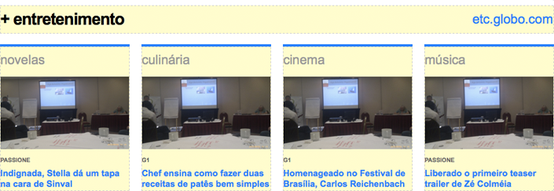
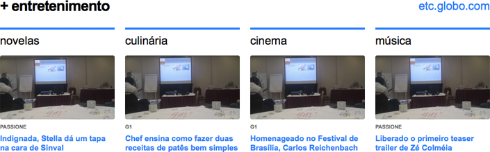

- v1.0.0 (02-06-2011)
Agrupador Super Wide Quádruplo¶
grid
O agrupador super wide quádruplo ocupa 12 colunas do grid, devendo assim estar incluído em uma área que possua 940px. A altura deste agrupador é variável.
Instalação¶
Para utilizar este agrupador, inclua a seguinte app como INSTALLED_APPS:
INSTALLED_APPS = [
#...
'libby.agrupadores.agrupador_super_wide_quadruplo',
#...
]
migration
Não se esqueça de rodar as migrations após instalar a app. Estas migrations criam o box template e os highlight templates no banco.
photo
Este agrupador utiliza um tamanho de foto: 220x123.
Siga as instruções da página de instalação para que este tamanho esteja disponível para seleção.
Associação do Agrupador Super Wide Quádruplo¶
O agrupador super wide quádruplo é um destaque e como tal, precisa ser associado a uma área qualquer do template da página em que se deseja usá-lo.
Essa associação pode ser feita manualmente (via migrations ou banco de dados), ou usando o admin de associação de área a box provido pelo libby.
css
As cores do agrupador super wide quádruplo devem ser sobrescritas com as cores do produto, como pode ser visto na lista de estilos padrão, com cor de exemplo(azul).
Para que a folha de estilo padrão não seja incluída automaticamente, inclua a configuração LIBBY_INCLUDE_CSS_COLORS como False no arquivo de configuração (settings.py).
css
Para suportar estilo por highlight, o agrupador super wide quádruplo requer a inclusão de um novo seletor em todos os highlights customizados que o produto suportar.
Basta incluir o seletor “li.glb-hl-style-<nome-do-estilo>” com o valor de “border-color” equivalente a cor daquele highlight e marcado como important!.
Exemplo: li.glb-hl-style-tela-quente { border-color: #000 !important; }
Utilização do Agrupador Super Wide Quádruplo¶
Dado que o agrupador super wide quádruplo está associado a alguma área, para utilizá-lo, basta adicioná-lo a área em questão.
O agrupador será apresentado conforme abaixo:
Após o preenchimento correto do agrupador, quando ele é publicado, ele aparece conforme a imagem abaixo:
